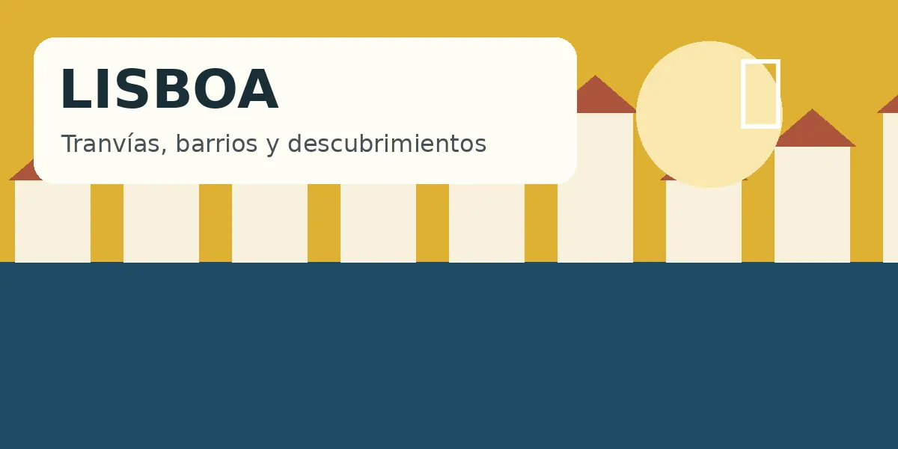

Día 2 · 11 agosto
Lisboa
Descubre el encanto de la capital portuguesa
Cargando aplicación…
Descubre el encanto de la capital portuguesa
Cargando aplicación…Si este mensaje continúa más de unos segundos, falta subir alguno de los archivos de la versión 6.2.